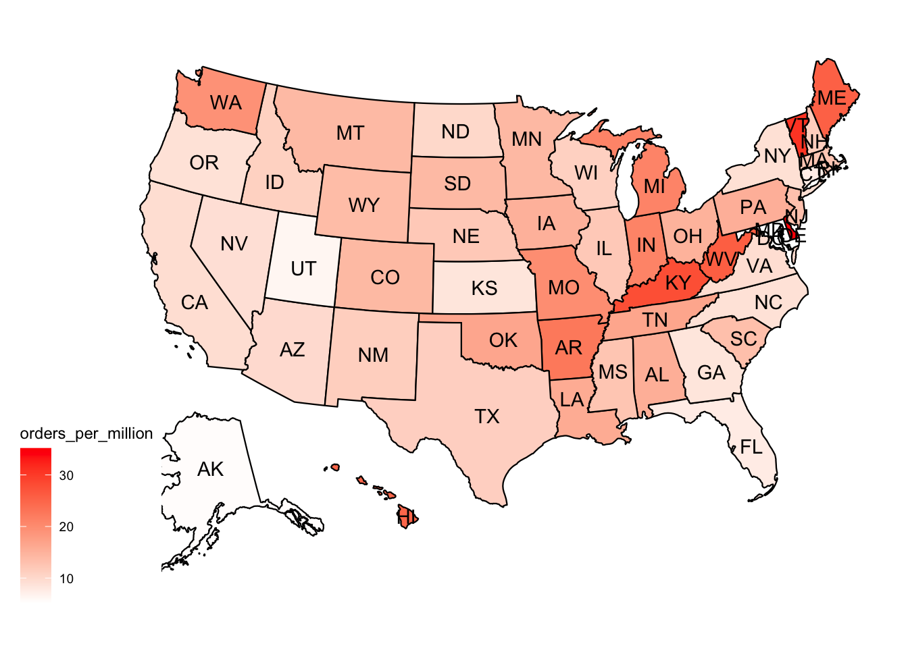

Code
library(tidyverse)
library(janitor)
library(gt)
library(usmap)On BlueSky this afternoon I came across some data that ProPublica were sharing on github about cancelled food orders funded by The Emergency Food Assistance Program (TEFAP). TEFAP is a USDA program that funds the distribution healthy food (meat, eggs, dairy, fruit/vege) from US suppliers to food banks, who pass it along to vulnerable people in communities across the country. Propublica had made a Freedom of Information Act (FOIA) request to USDA about cancelled food orders and written up this nice scrollytelling piece about the 94 million pounds of food orders that have been cancelled since June by the Trump administration.
“In all, the USDA records indicate that food banks were expecting more than 27 million pounds of chicken, 2 million gallons of milk, 10 million pounds of dried fruit and 67 million eggs that never arrived.”
This is the kind of data that TidyTuesday peeps might have fun with so I decided to dig into it to see whether I could visualise something interesting.
library(tidyverse)
library(janitor)
library(gt)
library(usmap)tefap <- read_csv("https://raw.githubusercontent.com/propublica/tefap-data/refs/heads/main/CCC%20FOIA%20Request%207.29.25.csv") %>%
clean_names() %>%
mutate(requested_del_date = mdy(requested_del_date), date_received = mdy(date_received)) %>%
rename(postal = sold_to_state, order_status = status_text)
glimpse(tefap)Rows: 5,359
Columns: 10
$ material <dbl> 100242, 100242, 100242, 100242, 100242, 100242, 100…
$ material_desc <chr> "BLUEBERRY WILD FRZ CTN-8/3 LB", "BLUEBERRY WILD FR…
$ requested_qty <dbl> 960, 480, 800, 640, 848, 300, 292, 308, 857, 275, 1…
$ sales_unit <chr> "CS", "CS", "CS", "CS", "CS", "CS", "CS", "CS", "CS…
$ order_status <chr> "Order Received", "Order Received", "Order Received…
$ requested_del_date <date> 2025-05-15, 2025-05-15, 2025-05-15, 2025-05-15, 20…
$ date_received <date> 2025-05-07, 2025-05-08, 2025-05-07, 2025-05-07, 20…
$ postal <chr> "AL", "AL", "AL", "AL", "AR", "AR", "AR", "AR", "AR…
$ sold_to_name <chr> "AL Dept. of Education", "AL Dept. of Education", "…
$ ship_to_name <chr> "Heart of Alabama Food Bank", "Feeding The Gulf Coa…tefap <- tefap %>%
mutate(year = year(requested_del_date),
month = month(requested_del_date)) %>%
filter(year == 2025)
bymonth <- tefap %>%
group_by(month, order_status) %>%
summarise(orders = n()) %>%
ungroup()`summarise()` has grouped output by 'month'. You can override using the
`.groups` argument.This plot has me wondering how complete this data is. There were a crazy number of cancelled orders in June and July but it is hard to make sense of whether those values are a problem without having a good idea of the total number of orders that are typically funded by this program and what proportion of those have been cancelled. It is strange that the orders received values are really low and flat across the early part of the year. I wonder whether the FOIA request only asked about cancelled orders.
bymonth %>%
ggplot(aes(x = month, y = orders, colour = order_status)) +
geom_point(size = 3) +
geom_line() +
labs(x = "Month", y = "Number of orders",
title = "Orders funded by The Emergency Food Assistance \nProgram CCC 2025 ",
caption = "Data FOIA to USDA made by Propublica \nhttps://github.com/propublica/tefap-data") +
scale_y_continuous(limits = c(0,2000)) +
scale_x_continuous(
breaks = 1:12,
labels = month.abb # or month.name for full names
) +
theme_bw() 
ggsave(here::here("posts", "2025-10-17_tefap", "featured.png"))Saving 7 x 5 in imageHere I am interested in mapping where the orders were cancelled. If I just plot cancelled orders, the states with the highest population pop out, so I need to do a bit of wrangling to get state level population data joined to the dataframe to allow me to correct for state population
Here I an counting the number of orders cancelled by state, then running a separate script that pastes state population data from wikipedia and joins it to my dataframe, before calculating how many orders per million population there are for each state.
state_cancelled_orders <- tefap %>%
filter(order_status == "Canceled") %>%
group_by(postal) %>%
summarise(orders_cancelled = n()) %>%
ungroup()
source(here::here("posts", "2025-10-17_tefap", "datapasta US state population wikipedia.R"))
joined_cancel <- left_join(state_cancelled_orders, state_abbrev_pop, by = "postal") %>%
mutate(millions = pop/1000000,
orders_per_million = orders_cancelled/millions)When represented as the number of orders cancelled per million population, it is clear that red states are being adversely affected by this funding cut.
plot_usmap(data = joined_cancel, values = "orders_per_million", labels=TRUE) +
scale_fill_continuous(low = "white", high = "red") 